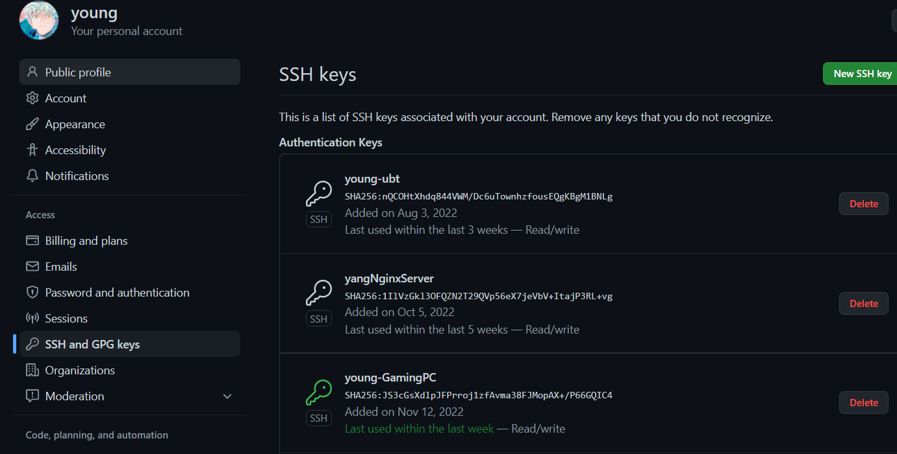

前情提要
只需要一個Terminal便能在主機之間穿梭自如，無所不能 ! 絕大部分的Linux系統都已有內建ssh，而Windows也是在近幾年才能不用額外安裝 PuTTy 而直接使用系統原生 ssh 功能，但若硬是要在Windows系統下做更多複雜的操作，還是逃不過得使用 WSL或使用 Linux 子系統，接下來本篇將會介紹一些自己平常使用頻率高且實用的 ssh 指令
SSH基礎知識
SSH 是一種遠端連線安全加密傳輸協定，CUI/GUI兩種版本都有，絕大部分的 Linux 系統都已內建 ssh 的連線服務，讓使用者或管理者遠端連線進來，透過 Linux 的 shell 來處理各種工作或系統管理，且SSH不僅加密機制安全性高，不用怕資料外洩，使用上也非常簡單 !
ssh連接Github
建立金鑰，這邊選擇用 ed25519 做為這次金鑰的加密演算法
1 | ssh-keygen -t ed25519 -C "your_email@example.com" |
這邊-t是指金鑰加密使用的演算法，系統不支援的話可改用 rsa 加密方式並設金鑰長度為4096
1 | ssh-keygen -t rsa -b 4096 -C "your_email@example.com" |
此時他會問存取金鑰的檔名、位置以及是否要加密碼等，一般我會把連接Github的公鑰改名為github_rsa.pub，而密碼我就不會再多加設定了
1 | Generating public/private ed25519 key pair. |
ssh-keygen常用參數
- -t：指定金鑰的加密演算法，預設使用
SSH2d的rsa。 - -f：指定金鑰的檔名，預設檔名會隨演算法而變動，例如使用
rsa加密時，檔名預設為 id_rsa（私鑰id_rsa，公鑰id_rsa.pub）。 - -P：提供舊密碼，空表示不需要密碼（-P ‘’）
- -N：提供新密碼，空表示不需要密碼(-N ‘’)
- -b：指定金鑰長度（bits）。
- -C：提供一個新標籤。
公鑰與私鑰
此時進cd進~/.ssh看看是否新增成功，可以看到生成兩把金鑰，一把是.pub的Public Key另一把則是Private Key，記得私鑰不應公開，要妥善保管在自己的電腦
1 | drwxrwxr-x 2 young young 4.0K 11月 16 09:56 . |
將公鑰新增到你的Github倉庫
1 | ~/.ssh$ cat github_rsa.pub |
印出公鑰內容並複製起來貼到你的 Github=>Settings=>SSH and GPG keys

測試連線
新增完公鑰後去終端機做連線測試，若成功應可看到Github的回覆
1 | ssh -T github.com |
若失敗就加上-v查看是哪個環節出了問題，-v參數會將連線過程印出來
1 | ssh -vT github.com |
完成就能用 ssh 連到 Github 對 repo 做各種操作啦 !
設定ssh-agent
若你跟我一樣是沒有設定ssh金鑰密碼的，那可以直接跳過此段落，那如果你有設定密碼，又不想每次再使用金鑰時都得輸入一次密碼那你就可以設定ssh-agent
1 | eval "$(ssh-agent -s)" |
自訂ssh config
不同主機為了提高安全性，都會將預設22 PORT更換掉、擋掉不明IP登入、只能用金鑰等入等等，但主機一多的話，每次ssh時都得夾帶一堆參數又記不得各個主機是哪個埠或是用哪把公鑰，所以乾脆寫config檔來讓電腦幫我記吧!
1 | Host yang # 簡稱 |
免密碼連線
不想每次ssh過去別的主機都得輸入一次密碼，因此我們可以直接拷貝一份公鑰至另一台主機
1 | ssh-copy-id -p888 -i ~/.ssh/id_rsa.pub young@192.0.0.1 |
當遠端主機的公鑰被接受以後，它會被保存在文件~/.ssh/known_hosts之中。下次再連接這台主機，系統就會認出它的公鑰已經保存在本地了，從而跳過警告部分，直接提示輸入密碼。
而每個 SSH 用戶都有自己的 known_hosts 文件，此外系統也有一個這樣的文件，通常是/etc/ssh/ssh_known_hosts，保存一些對所有用戶都可信賴的遠程主機的公鑰
known_host & fingerprints
本機的~/.ssh/known_hosts檔案中，記錄了所有過去曾經透過 SSH 連結到的遠端主機。
1 | github.com ssh-ed25519 AAAAC3NzaC1lZDI1NTE5AAAAIOMqqnkVzrm0SdG6UOoqKLsabgH5C9okWi0dh2l9GKJl |
如果想要知道遠端主機的 fingerprints 可以先透過 SSH 連進遠端主機後，輸入：
1 | $ ssh akebi@192.168.1.999 |
如果想要清楚本機連線到某一遠端主機的紀錄，可以輸入：
1 | ssh-keygen -R 192.168.1.999 |
scp指令
設定好 ssh 後，其中一個強大之處就是我們就可以在不同主機間透過scp指令拷貝檔案
1 | scp <file> <username>@<hostname>:<path> |
檢視遠端主機log檔
主機上登入記錄的 log 檔位於/var/log/auth.log，可以看到所有連線紀錄
1 | ssh young@hostname |
參考資料
https://docs.github.com/en/authentication/connecting-to-github-with-ssh
https://linuxize.com/post/using-the-ssh-config-file/
若您覺得這篇文章對您有幫助，歡迎直接打開右下角的open chat及時聊天或留言或是分享出去讓更多人看到⊂◉‿◉つ~若此文章的thumbnail若使用的範例圖片有涉及侵權問題，請盡速通知站長以在最短時間內下架≦(._.)≧...感激不盡！!